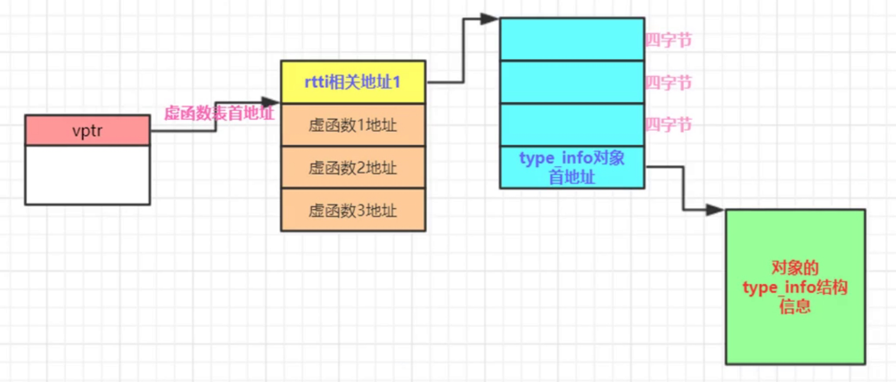

成员函数的调用方式
- 成员函数的调用转换成了全局的函数
- 成员函数有独立的内存地址，跟着类走的，成员函数的地址是编译时确定好的
- 编译器额外增加了一个this形参，指向生成的对象
- 常规成员变量的存取，都通过形参来进行。比如this->m_i
虚函数调用
class Obj{
public:
int m_i;
void func(int abc) {
m_i += abc;
}
void virtual virfunc1() {
virfunc2(); //通过虚函数表指针来寻址
Obj::virfunc2(); //效率高, 等价于调用普通函数
}
void virtual virfunc2() {}
};
pmyacls->myvirfunc(); //要通过虚函数表指针查找虚函数表，通过虚函数表在好到虚函数的入口地址，完成对虚函数的调用
//编译器视角
//(*pmyacls->vptr[0])(pmyacls);
//a)vptr，编译器给生成的虚函数表指针，指向虚函数表
//b)[0] 虚函数表中第一项。代表myvirfunc()地址
//c)传递一个参数进去，就是this，也是编译器给加的
//d)*就得到了虚函数的地址
静态函数
- 各种调用方式都是类名调用
- 静态函数不需要this指针
void func(int abc) {
//m_i += abc;
printf("func");
}
((Obj *)0)->func(2);可以执行
希望成员函数支持类对象之外的存取操作
//静态成员函数特性
//a)静态成员函数没有this指针，这点最重要
//b)无法直接存取类中普通的非静态成员变量；
//c)静态成员函数不能在屁股后使用const，也不能设置为virtual
//d)可以用类对象调用，但不非一定要用类对象调用。
//e)静态成员函数等同于非成员函数，有的需要提供回调函数的这种场合，可以将静态成员函数作为回调函数；
继承的非虚函数坑
Derive derive;
Derive *pderive = &derive;
pderive->myfunc(); //Derive::myfunc()子类
Base *pbase = &derive;
pbase->myfunc();//调用父类
- 普通成员函数是静态绑定，换句话说，myfunc() 是普通成员函数。这里到底调用父类的myfunc还是子类的myfunc取决于调用者的静态类型；
虚函数缺省参数的动态坑
class Base
{
public:
void myfunc() //普通成员函数
{
cout << "Base::myfunc()" << endl;
}
virtual void myvirfunc(int value = 1)
{
cout << "Base::myvirfunc(),value = " << value << endl;
}
};
class Derive :public Base
{
public:
void myfunc() //普通成员函数
{
cout << "Derive::myfunc()" << endl;
}
virtual void myvirfunc(int value = 2)
{
cout << "Derive::myvirfunc(),value = " << value << endl;
}
};
- 虚函数缺省参数是静态绑定，考虑到执行效率的问题
- 不要重新定义虚函数缺省参数的值
- 不应该在子类中重新定义一个继承来的非虚函数
多态
- 调用虚函数没有查询虚函数表，不一定是多态
- 有继承关系
- 父类指针或者引用指向子类对象
- 派生类重写了子类的虚函数
单继承
Base* pb = new Derived()
pb->g()
编译器视角
(*pb)->vptr[1](pb)
回顾和一些测试
- 虚函数地址，编译期间确认下来
- 顺序记录每个虚函数的地址
- vptr编译期间产生，编译器在构造函数中插入了给vptr赋值的代码。
- 纯虚函数依然会在虚函数表中占据一个表项目
多继承虚函数，第二基类，虚析构
Base* pb2 = new Derived()
Derived* tmp = new Derived()
Base2* pb2 = (Base2*)((char*)tmp + sizeof(Base))
- 如何成功删除用第二基类指针new出来的继承类对象
- 非虚析构函数仍然是个普通析构函数，系统释放的是pb2开头的内存仍然异常
- Base2有个虚的析构函数则编译器实际执行~Derived(),~Base2(),Base()
- Derived没有虚析构函数，编译器会为其合成虚析构函数，虚析构函数名可以跟父类不一样

thunk
- 汇编代码
- 在多重继承中用于this指针调整
- 调用Derived析构函数
0000000000000044 <non-virtual thunk to Derive::~Derive()>:
44: 48 83 ef 08 sub rdi,0x8 this指针指向derived对象首地址
48: eb b6 jmp 0 <Derive::~Derive()>
000000000000002b <non-virtual thunk to Derive::~Derive()>:
2b: 48 83 ef 08 sub rdi,0x8
2f: eb cf jmp 0 <Derive::~Derive()>
多继承第二基类虚函数支持和虚继承带虚函数
通过指向第二个基类的指针调用继承类的虚函数；
Base2 *pb2 = new Derive();
delete pb2; 调用继承类的虚析构函数
一个指向派生类的指针，调用第二个基类中的虚函数
Derive *pd2 = new Derive();
pd2->hBase2();
允许虚函数的返回值类型有所变化
Base2 *pb1 = new Derive(); pb1指向的是Base2子对象的首地址
Base2 *pb2 = pb1->clone(); Derive::clone();
执行clone()时，pb1首先会调整回指向Derivce对象的首地址，这样调用的是Derive版本的clone()
虚继承带虚函数
RTTI
- RTTI实现原理 typeid返回的是一个常量对象的引用，这个常量对象的类型一般是type_info（类）
- 
- vptr vtbl rtti的 type_info信息编译之后就存在
编译器优化
- 优化循环，把循环优化成1条语句；
- 在编译期间，编译器也具有运算能力，有些运算编译器在编译期间就能搞定；
多重继承
- 继承关系深度增加，开销一般也会增加
- 很多情况下，随着继承深度的增加，开销或者说执行时间也会增加；
- 多重继承一般也会导致开销增加
成员函数指针&&vall
- 通过成员函数指针对常规的成员函数调用的成本，和通过普通的函数指针来调用静态成员函数，成本上差不多；
- 成员函数指针里保存的是vcall = virtual call 虚调用(vcall trunk)地址
- 直接把vcall看成虚函数表vcall{0}代表的就是虚函数表里的第一个函数，vcall{4}就代表虚函数表里的第二个虚函数
- vcall地址就是虚函数在虚函数表中的偏移值，结合对象指针，就能确定具体的虚函数地址
- 成员函数地址是真正的地址
inline函数
- inline会导致编译器内部有一个比较复杂的测试算法来评估这个inline函数的复杂度
- 赋值次数和内部函数调用，调用次数
- 开发者写的inline只是对编译器的建议
- inline会带来额外的问题，比如函数求值，临时对象的生成和管理
- 局部变量的引入，能少用就尽量少用，能不用就不用
- 10行以内，少用循环